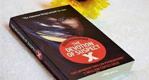

$14.99
Take Your Engine to Knowledge
Best Seller this month : Guns, Germs, and Steel
$14.99
The devotion of suspect X
The Devotion of Suspect X is a 2005 novel by Keigo Higashino, the third in his Detective Galileo series and is his most acclaimed work thus far.
The novel won him numerous awards, including the 134th Naoki Prize, which is a highly regarded award in Japan.
The novel also won the 6th Honkaku Mystery Award, which is one of the most prestigious awards in the mystery novels category in Japan.2006 Honkaku Mystery Best 10 and Kono Mystery ga Sugoi! 2006, annual mystery fiction guide books published in Japan, ranked the novel as the number one.
The English translation was nominated for the 2012 Edgar Award for Best Novel and the 2012 Barry Award for Best First Novel.